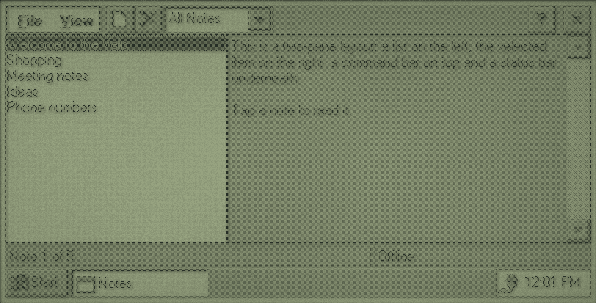
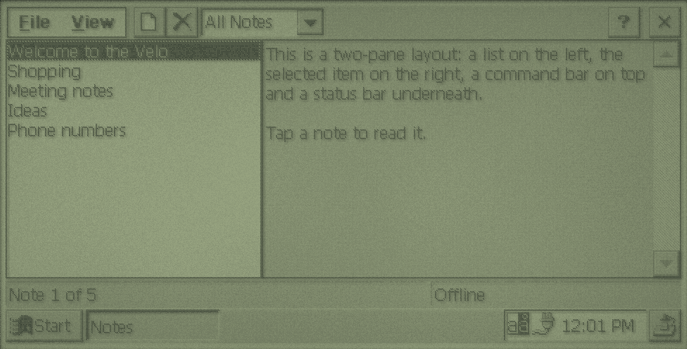
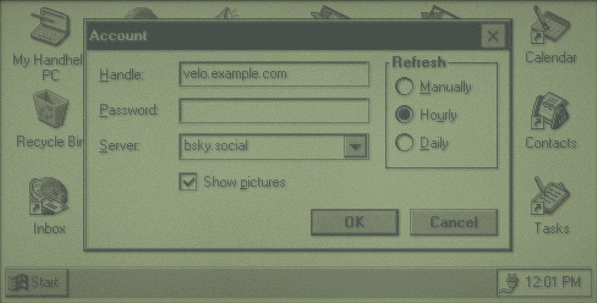
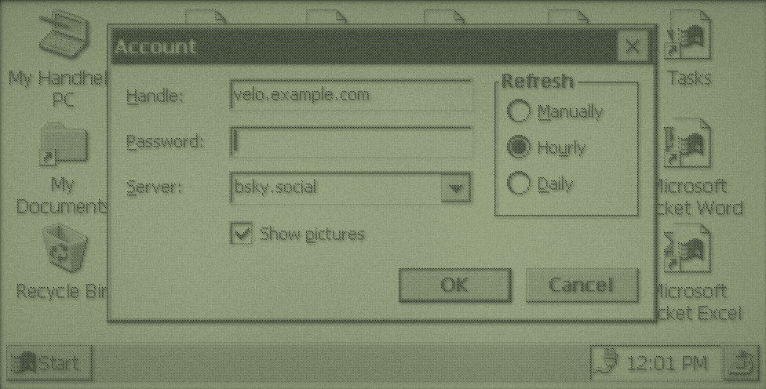
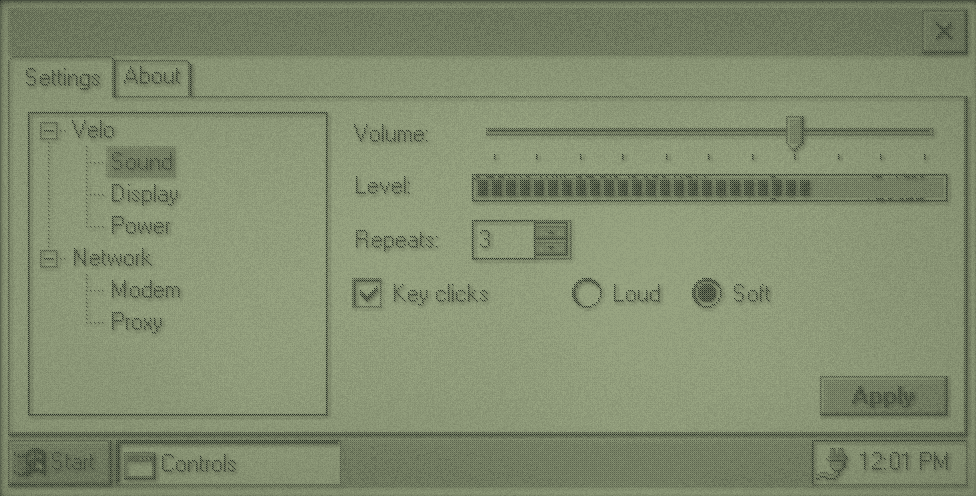
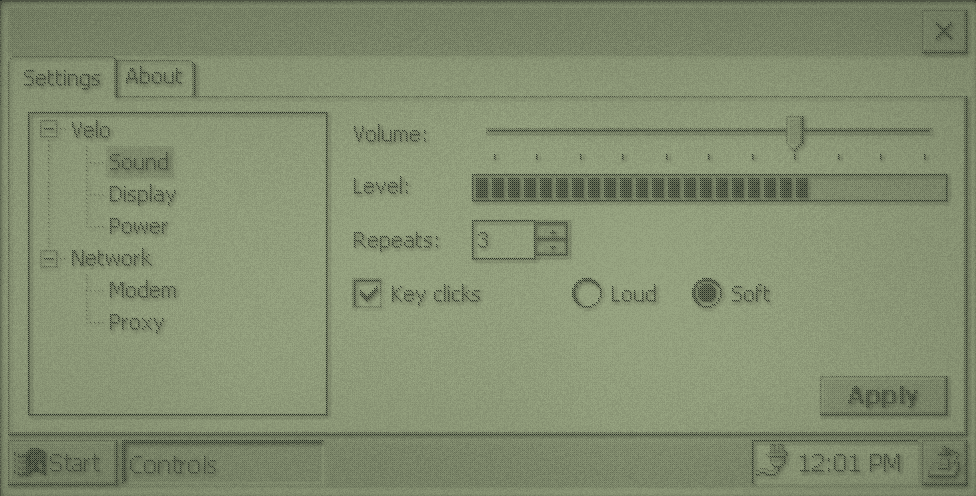
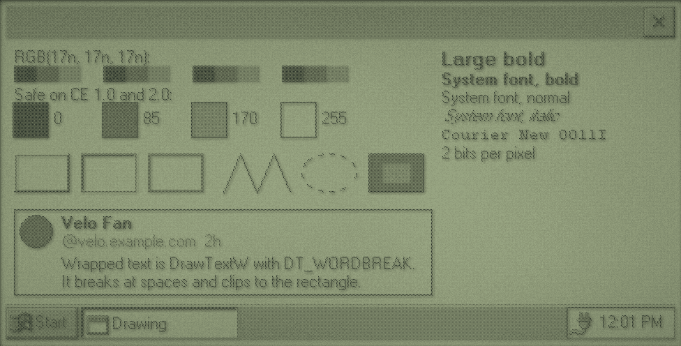
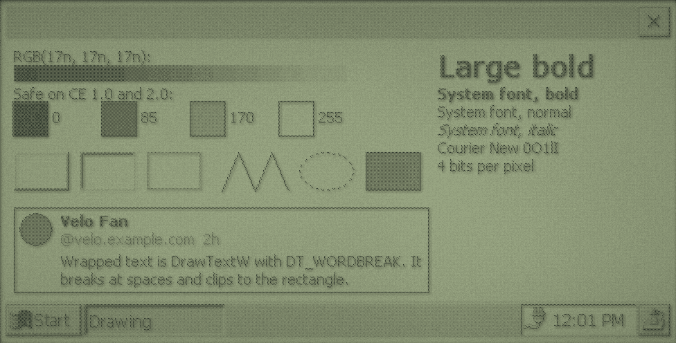

Designing for 480 x 240
The Velo's screen is wide and short, and the taskbar takes a strip off the bottom. Every layout in this chapter follows the same rules, which are also how Microsoft's own CE programs look:
- One full-screen main window, no title bar. Create it with
WS_VISIBLE | WS_CLIPCHILDRENandCW_USEDEFAULTfor the size, and CE fills the space above the taskbar. The taskbar button shows its title. - A command bar on top. It holds the menus, toolbar buttons, perhaps a drop-down list, and the close and help buttons. It replaces both the menu bar and the title bar.
- A status bar underneath, when there's something to report.
- Size everything in
WM_SIZE, from the client rectangle minus the command bar's and status bar's heights. Don't hard-code 480. - Use system colours (
GetSysColor,GetSysColorBrush) for anything that should look like the rest of CE, and the four safe greys below for your own drawing. - Make tap targets at least 20 pixels tall. A standard dialog button, 14 dialog units, is 22 pixels tall on the Velo. A stylus is precise, but a thumb on the move isn't.
The examples below are in docs/primer/examples. Each one builds for both CE versions and starts in the state shown.
Recipe 1: Two Panes
A list on the left, the selected item on the right: the mail reader layout, and velo-bluesky's. Here the list is a LISTBOX and the reader a read-only multi-line EDIT, which wraps and scrolls text for free.


frame: command bar with menus, buttons from CE's standard bitmap, a combo box and the help and close buttons.The command bar
static void create_command_bar(HWND frame) {
static const int commands[] = {ID_FILE_NEW, ID_FILE_DELETE};
static const int bitmaps[] = {STD_FILENEW, STD_DELETE};
TBBUTTON buttons[3] = {0};
command_bar = CommandBar_Create(instance, frame, IDC_COMMAND_BAR);
CommandBar_InsertMenubar(command_bar, instance, IDM_MAIN, 0);
CommandBar_AddBitmap(command_bar, HINST_COMMCTRL, IDB_STD_SMALL_COLOR, 15, 16, 16);
buttons[0].fsStyle = TBSTYLE_SEP;
for (int index = 0; index < 2; index++) {
buttons[index + 1].iBitmap = bitmaps[index];
buttons[index + 1].idCommand = commands[index];
buttons[index + 1].fsState = TBSTATE_ENABLED;
buttons[index + 1].fsStyle = TBSTYLE_BUTTON;
}
CommandBar_AddButtons(command_bar, 3, buttons);
HWND folder = CommandBar_InsertComboBox(command_bar, instance, FOLDER_WIDTH, CBS_DROPDOWNLIST | WS_VSCROLL, IDC_FOLDER, 4);
SendMessageW(folder, CB_ADDSTRING, 0, (LPARAM)L"All Notes");
SendMessageW(folder, CB_ADDSTRING, 0, (LPARAM)L"Personal");
SendMessageW(folder, CB_ADDSTRING, 0, (LPARAM)L"Work");
SendMessageW(folder, CB_SETCURSEL, 0, 0);
CommandBar_AddAdornments(command_bar, CMDBAR_HELP, 0);
}Things go on the bar left to right, in the order you add them:
CommandBar_InsertMenubarputs a menu resource on the bar. It counts as button 0.CommandBar_AddBitmapadds button pictures.HINST_COMMCTRLandIDB_STD_SMALL_COLORgive CE's standard 15:STD_FILENEW,STD_DELETE,STD_FINDand the rest. For your own, pass your instance and aBITMAPresource with the pictures side by side, and giveCommandBar_AddBitmaptheir size. CE's own are 16 x 15.CommandBar_AddButtonsadds buttons, each aTBBUTTONwith a picture index and the command ID it sends inWM_COMMAND. ATBSTYLE_SEPentry is a gap.CommandBar_InsertComboBoxputs a drop-down list before the given button position (4: after the menu, a gap and two buttons).CommandBar_AddAdornmentscomes last and adds the close button, and the ? button withCMDBAR_HELP, which sendsWM_HELP.
The menu is an ordinary resource. Text after \t is shown on the right, as a reminder of the shortcut, but it's the ACCELERATORS table that makes the key work:
#include <windows.h>
#include "resource.h"
IDM_MAIN MENU
BEGIN
POPUP "&File"
BEGIN
MENUITEM "&New Note\tCtrl+N", ID_FILE_NEW
MENUITEM "&Delete Note\tDel", ID_FILE_DELETE
MENUITEM SEPARATOR
MENUITEM "E&xit", ID_FILE_EXIT
END
POPUP "&View"
BEGIN
MENUITEM "&Next Note\tCtrl+Down", ID_VIEW_NEXT
MENUITEM "&Previous Note\tCtrl+Up", ID_VIEW_PREVIOUS
MENUITEM SEPARATOR
MENUITEM "&About Notes...", ID_HELP_ABOUT
END
END
IDA_MAIN ACCELERATORS
BEGIN
"N", ID_FILE_NEW, VIRTKEY, CONTROL, NOINVERT
VK_DOWN, ID_VIEW_NEXT, VIRTKEY, CONTROL, NOINVERT
VK_UP, ID_VIEW_PREVIOUS, VIRTKEY, CONTROL, NOINVERT
ENDLaying out
static void layout(HWND frame) {
RECT client;
RECT status;
GetClientRect(frame, &client);
SendMessageW(status_bar, WM_SIZE, 0, 0);
GetWindowRect(status_bar, &status);
int top = CommandBar_Height(command_bar);
int height = client.bottom - top - (status.bottom - status.top);
int split = client.right * LIST_PERCENT / 100;
MoveWindow(note_list, 0, top, split, height, TRUE);
MoveWindow(reader, split, top, client.right - split, height, TRUE);
}The status bar sizes itself when it gets WM_SIZE, so pass that on first and then measure it. SB_SETPARTS divides it into sections, given as the right edge of each, with -1 meaning "to the end".
Microsoft's CE 1.0 documentation says a menu can't contain a submenu there, so keep menus one level deep if you build for both.
For a pane divider the user can drag, leave a gap between the panes, paint it in WM_PAINT, and handle the stylus on the frame itself with SetCapture. velo-bluesky's src/main.c does this in about 30 lines.
Recipe 2: List and Details
A list view in report mode shows rows with columns, icons and full-row selection. The details on the right are drawn straight onto the frame window in WM_PAINT, with a progress bar and a button as child windows below them. This is the shape of an app store.


appstore: it starts a pretend download at launch so the progress bar shows. Free space comes from GetStoreInformation.Filling a list view
static void add_column(int index, const WCHAR *title, int width, int format) {
LVCOLUMNW column = {0};
column.mask = LVCF_TEXT | LVCF_WIDTH | LVCF_FMT | LVCF_SUBITEM;
column.fmt = format;
column.cx = width;
column.pszText = (LPWSTR)title;
column.iSubItem = index;
SendMessageW(app_list, LVM_INSERTCOLUMNW, index, (LPARAM)&column);
}
static void set_cell(int row, int column, const WCHAR *text) {
LVITEMW item = {0};
item.iSubItem = column;
item.pszText = (LPWSTR)text;
SendMessageW(app_list, LVM_SETITEMTEXTW, row, (LPARAM)&item);
}
static void fill_list(void) {
HIMAGELIST icons = ImageList_Create(16, 16, ILC_COLOR | ILC_MASK, 1, 0);
ImageList_AddIcon(icons, LoadImageW(instance, MAKEINTRESOURCEW(1), IMAGE_ICON, 16, 16, 0));
SendMessageW(app_list, LVM_SETIMAGELIST, LVSIL_SMALL, (LPARAM)icons);
SendMessageW(app_list, LVM_SETEXTENDEDLISTVIEWSTYLE, LVS_EX_FULLROWSELECT, LVS_EX_FULLROWSELECT);
add_column(0, L"Name", 100, LVCFMT_LEFT);
add_column(1, L"Version", 50, LVCFMT_LEFT);
add_column(2, L"Size", 50, LVCFMT_RIGHT);
for (int index = 0; index < (int)APP_COUNT; index++) {
WCHAR size[16];
LVITEMW item = {0};
item.mask = LVIF_TEXT | LVIF_IMAGE | LVIF_PARAM;
item.iItem = index;
item.pszText = (LPWSTR)apps[index].name;
item.iImage = 0;
item.lParam = index;
SendMessageW(app_list, LVM_INSERTITEMW, 0, (LPARAM)&item);
wsprintfW(size, L"%d KB", apps[index].size_kb);
set_cell(index, 1, apps[index].version);
set_cell(index, 2, size);
}
}Insert a row with LVM_INSERTITEMW, which sets the first column, then fill the others with LVM_SETITEMTEXTW. lParam on each row is yours: store an index or pointer there, because rows move if the list is sorted. Icons come from an image list made with ImageList_Create.
Hearing about selection
Common controls report through WM_NOTIFY. The NMHDR at the start says which control and what happened. For list views it's the start of an NMLISTVIEW:
case WM_NOTIFY: {
NMLISTVIEW *change = (NMLISTVIEW *)lparam;
if (change->hdr.idFrom == IDC_APPS && change->hdr.code == LVN_ITEMCHANGED && (change->uNewState & LVIS_SELECTED)) {
selected = (int)change->lParam;
update_details();
}
return 0;
}LVN_ITEMCHANGED fires for every state change of every row, including the old selection being cleared, so check that the new state includes LVIS_SELECTED.
Drawing the details
static void paint_details(HWND frame) {
PAINTSTRUCT paint;
WCHAR line[64];
HDC dc = BeginPaint(frame, &paint);
if (selected >= 0) {
const app_t *app = &apps[selected];
RECT area = details;
SetBkMode(dc, TRANSPARENT);
HGDIOBJ previous = SelectObject(dc, title_font);
DrawTextW(dc, app->name, -1, &area, DT_LEFT | DT_SINGLELINE | DT_NOPREFIX);
SelectObject(dc, previous);
area.top += 22;
wsprintfW(line, L"Version %s by %s", app->version, app->author);
DrawTextW(dc, line, -1, &area, DT_LEFT | DT_SINGLELINE | DT_NOPREFIX | DT_END_ELLIPSIS);
area.top += 20;
DrawTextW(dc, app->description, -1, &area, DT_LEFT | DT_WORDBREAK | DT_NOPREFIX);
}
EndPaint(frame, &paint);
}DrawTextW does the work: single lines with DT_SINGLELINE, an ellipsis when they don't fit with DT_END_ELLIPSIS, and wrapped paragraphs with DT_WORDBREAK. DT_NOPREFIX stops & being treated as a shortcut marker, which you want for any text you didn't write.
Recipe 3: A Dialog
Forms are easiest as dialog resources: you describe the controls in the .rc file and CE creates them, handles Tab between them, and presses the default button on Enter. This one also loads and saves its settings in the registry.


form: a modal dialog with no main window behind it.#include <windows.h>
#include "resource.h"
IDD_ACCOUNT DIALOG 0, 0, 230, 100
STYLE DS_MODALFRAME | DS_CENTER | WS_POPUP | WS_CAPTION | WS_SYSMENU
CAPTION "Account"
BEGIN
LTEXT "&Handle:", IDC_STATIC, 6, 8, 40, 10
EDITTEXT IDC_HANDLE, 50, 6, 104, 13, ES_AUTOHSCROLL | WS_TABSTOP
LTEXT "&Password:", IDC_STATIC, 6, 26, 40, 10
EDITTEXT IDC_PASSWORD, 50, 24, 104, 13, ES_AUTOHSCROLL | ES_PASSWORD | WS_TABSTOP
LTEXT "&Server:", IDC_STATIC, 6, 44, 40, 10
COMBOBOX IDC_SERVER, 50, 42, 104, 60, CBS_DROPDOWNLIST | WS_VSCROLL | WS_TABSTOP
AUTOCHECKBOX "Show &pictures", IDC_PICTURES, 50, 62, 100, 10, WS_TABSTOP
AUTORADIOBUTTON "&Manually", IDC_MANUAL, 168, 14, 52, 10, WS_GROUP | WS_TABSTOP
AUTORADIOBUTTON "Ho&urly", IDC_HOURLY, 168, 28, 52, 10
AUTORADIOBUTTON "&Daily", IDC_DAILY, 168, 42, 52, 10
GROUPBOX "Refresh", IDC_STATIC, 162, 2, 62, 58, WS_GROUP
DEFPUSHBUTTON "OK", IDOK, 122, 80, 48, 14, WS_TABSTOP
PUSHBUTTON "Cancel", IDCANCEL, 176, 80, 48, 14, WS_TABSTOP
ENDPositions are in dialog units, which scale with the dialog font: this 230-unit-wide dialog is 351 pixels wide on the Velo, frame included, about one and a half pixels per unit. & in a label underlines the next letter. WS_GROUP starts a group of radio buttons, which ends at the next control with WS_GROUP.
Running it
CE's DLLs don't export DialogBoxParamW. Microsoft's SDK headers made it a macro that finds the template and calls the Indirect version, which is all this does:
static int run_dialog(HINSTANCE instance, int id, HWND owner, DLGPROC procedure, void *parameter) {
HRSRC resource = FindResource(instance, MAKEINTRESOURCEW(id), RT_DIALOG);
HGLOBAL loaded = resource ? LoadResource(instance, resource) : NULL;
if (!loaded) {
return -1;
}
return DialogBoxIndirectParamW(instance, LockResource(loaded), owner, procedure, (LPARAM)parameter);
}DialogBoxIndirectParamW runs its own message loop and returns the value passed to EndDialog. The last argument arrives in WM_INITDIALOG's lParam: pass a pointer to the data the dialog edits, and keep it with DWL_USER.
static BOOL CALLBACK account_procedure(HWND dialog, UINT message, WPARAM wparam, LPARAM lparam) {
account_t *account = (account_t *)GetWindowLongW(dialog, DWL_USER);
switch (message) {
case WM_INITDIALOG:
account = (account_t *)lparam;
SetWindowLongW(dialog, DWL_USER, (LONG)account);
fill_dialog(dialog, account);
SetFocus(GetDlgItem(dialog, IDC_PASSWORD));
return FALSE;
case WM_COMMAND:
if (LOWORD(wparam) == IDOK) {
if (read_dialog(dialog, account)) {
EndDialog(dialog, IDOK);
}
return TRUE;
}
if (LOWORD(wparam) == IDCANCEL) {
EndDialog(dialog, IDCANCEL);
return TRUE;
}
break;
}
return FALSE;
}A dialog procedure returns TRUE when it handled a message and FALSE to let the dialog manager do the default. From WM_INITDIALOG, return FALSE if you set the focus yourself. To refuse OK, show why and return without calling EndDialog.
For a dialog that stays open beside your main window, such as a find box, use CreateDialogIndirectParamW, pass messages through IsDialogMessageW in your main loop, and close it with DestroyWindow, not EndDialog.
The CE way: OK in the title bar
This dialog has desktop-style OK and Cancel buttons. Many CE dialogs instead put OK in the title bar, beside the close button, which saves a row on a 240-pixel screen. Add WS_EX_CAPTIONOKBTN to the dialog's extended style (an EXSTYLE line in the .rc file): the title bar's OK sends IDOK and its close button sends IDCANCEL, so the dialog procedure doesn't change. It works on both versions.
Recipe 4: Tabs and Common Controls
A tab control is only the row of tabs. The pages are your own child windows, shown and hidden when the selection changes. This page also has a tree view, a trackbar driving a progress bar, a number box with up and down arrows, a check box and radio buttons.


controls: everything here is a stock control.static void create_settings_page(HWND frame) {
HWND tree = add_control(0, 0, WC_TREEVIEW, NULL, WS_BORDER | TVS_HASBUTTONS | TVS_HASLINES | TVS_LINESATROOT | TVS_SHOWSELALWAYS,
IDC_TREE, frame);
HTREEITEM device = add_tree_item(tree, TVI_ROOT, L"Velo");
HTREEITEM sound = add_tree_item(tree, device, L"Sound");
add_tree_item(tree, device, L"Display");
add_tree_item(tree, device, L"Power");
HTREEITEM network = add_tree_item(tree, TVI_ROOT, L"Network");
add_tree_item(tree, network, L"Modem");
add_tree_item(tree, network, L"Proxy");
SendMessageW(tree, TVM_EXPAND, TVE_EXPAND, (LPARAM)device);
SendMessageW(tree, TVM_EXPAND, TVE_EXPAND, (LPARAM)network);
SendMessageW(tree, TVM_SELECTITEM, TVGN_CARET, (LPARAM)sound);
add_control(0, 0, L"STATIC", L"Volume:", SS_LEFT, IDC_VOLUME_LABEL, frame);
HWND volume = add_control(0, 0, TRACKBAR_CLASS, NULL, TBS_HORZ | TBS_AUTOTICKS | WS_TABSTOP, IDC_VOLUME, frame);
SendMessageW(volume, TBM_SETRANGE, TRUE, MAKELPARAM(0, 10));
SendMessageW(volume, TBM_SETTICFREQ, 1, 0);
SendMessageW(volume, TBM_SETPOS, TRUE, 7);
add_control(0, 0, L"STATIC", L"Level:", SS_LEFT, IDC_LEVEL_LABEL, frame);
HWND level = add_control(0, 0, PROGRESS_CLASS, NULL, WS_BORDER, IDC_LEVEL, frame);
SendMessageW(level, PBM_SETRANGE, 0, MAKELPARAM(0, 10));
SendMessageW(level, PBM_SETPOS, 7, 0);
add_control(0, 0, L"STATIC", L"Repeats:", SS_LEFT, IDC_COPIES_LABEL, frame);
HWND copies = add_control(0, 0, L"EDIT", NULL, WS_BORDER | ES_NUMBER | WS_TABSTOP, IDC_COPIES, frame);
HWND arrows = add_control(0, 0, UPDOWN_CLASS, NULL, UDS_SETBUDDYINT | UDS_ALIGNRIGHT | UDS_ARROWKEYS, IDC_COPIES_ARROWS, frame);
SendMessageW(arrows, UDM_SETBUDDY, (WPARAM)copies, 0);
SendMessageW(arrows, UDM_SETRANGE, 0, MAKELPARAM(9, 1));
SendMessageW(arrows, UDM_SETPOS, 0, MAKELPARAM(3, 0));
HWND sounds = add_control(0, 0, L"BUTTON", L"Key clicks", BS_AUTOCHECKBOX | WS_TABSTOP, IDC_SOUNDS, frame);
SendMessageW(sounds, BM_SETCHECK, BST_CHECKED, 0);
add_control(0, 0, L"BUTTON", L"Loud", BS_AUTORADIOBUTTON | WS_GROUP | WS_TABSTOP, IDC_LARGE, frame);
add_control(0, 0, L"BUTTON", L"Soft", BS_AUTORADIOBUTTON, IDC_SMALL, frame);
CheckRadioButton(frame, IDC_LARGE, IDC_SMALL, IDC_SMALL);
add_control(0, 0, L"BUTTON", L"Apply", BS_PUSHBUTTON | WS_TABSTOP, IDC_APPLY, frame);
}Things to notice:
- A tree view item is added with
TVM_INSERTITEMWunder a parent, and the returnedHTREEITEMis the parent for the next level. - Range messages pack two numbers into
lParamwithMAKELPARAM, but not always in the same order. A trackbar takes the minimum then the maximum. An up-down control takes the maximum then the minimum, soMAKELPARAM(9, 1)gives 1 to 9, with the up arrow counting up. - An up-down control with
UDS_SETBUDDYINTwrites its number into its buddy, the edit box, andUDS_ALIGNRIGHTsits it on the buddy's right edge. - A trackbar reports movement with
WM_HSCROLL, its handle inlParam.
case WM_CREATE:
command_bar = CommandBar_Create(instance, frame, IDC_COMMAND_BAR);
CommandBar_AddAdornments(command_bar, 0, 0);
create_settings_page(frame);
create_about_page(frame);
tabs = CreateWindowExW(0, WC_TABCONTROL, NULL, WS_CHILD | WS_VISIBLE | WS_CLIPSIBLINGS, 0, 0, 0, 0, frame, (HMENU)IDC_TABS,
instance, NULL);
add_tab(0, L"Settings");
add_tab(1, L"About");
show_page(0);
return 0;
case WM_HSCROLL:
if ((HWND)lparam == GetDlgItem(frame, IDC_VOLUME)) {
int volume = (int)SendMessageW((HWND)lparam, TBM_GETPOS, 0, 0);
SendMessageW(GetDlgItem(frame, IDC_LEVEL), PBM_SETPOS, volume, 0);
}
return 0;Create the pages first and the tab control last, so the pages are on top of it. CE gives every window WS_CLIPSIBLINGS and WS_CLIPCHILDREN whether you ask or not, so creation order is what decides who paints over whom.
What's there
Tested by creating each class on both ROMs. InitCommonControls registers all of them except the calendar, date picker and rebar. CE 2.0 adds those with InitCommonControlsEx and ICC_DATE_CLASSES or ICC_COOL_CLASSES. CE 1.0 doesn't have them.
| Class | Control | CE 1.0 | CE 2.0 |
|---|---|---|---|
BUTTON, EDIT, STATIC, LISTBOX, COMBOBOX, SCROLLBAR | Standard controls | Yes | Yes |
SysListView32 (WC_LISTVIEW) | List view | Yes | Yes |
SysTreeView32 (WC_TREEVIEW) | Tree view | Yes | Yes |
SysTabControl32 (WC_TABCONTROL) | Tabs | Yes | Yes |
msctls_progress32 (PROGRESS_CLASS) | Progress bar | Yes | Yes |
msctls_trackbar32 (TRACKBAR_CLASS) | Trackbar (slider) | Yes | Yes |
msctls_updown32 (UPDOWN_CLASS) | Up-down arrows | Yes | Yes |
ToolbarWindow32, msctls_statusbar32, SysHeader32 | Toolbar, status bar, column header | Yes | Yes |
SysMonthCal32, SysDateTimePick32 | Calendar, date picker | No | Yes, with ICC_DATE_CLASSES |
ReBarWindow32 | Rebar (CE 2.0's command bands use it) | No | Yes, with ICC_COOL_CLASSES |
tooltips_class32 | Tooltips | No | No |
RICHEDIT, RichInk | Rich text | No | No |
Recipe 5: Drawing Your Own
When stock controls don't fit, paint it yourself. velo-bluesky's timeline and post views are custom windows drawn this way. This example shows the greys, fonts, shapes and a post card.


drawing: look at the top row on CE 1.0.The four safe greys
CE 2.0 maps any colour to the nearest of its 16 greys. CE 1.0 doesn't match colours at all: it uses the bottom two bits of the red value as the grey's number. So RGB(128, 128, 128) is black on CE 1.0 (128 ends in binary 00), RGB(17, 17, 17) is dark grey, and pure red is white. The top row above is RGB(17n, 17n, 17n) for n from 0 to 15: smooth on CE 2.0, four repeats of the same four greys on CE 1.0.
| Use | Value | CE 1.0 | CE 2.0 |
|---|---|---|---|
| Black | RGB(0, 0, 0) | Black | Black |
| Dark grey | RGB(85, 85, 85) | Dark grey | Dark grey |
| Light grey | RGB(170, 170, 170) | Light grey | Light grey |
| White | RGB(255, 255, 255) | White | White |
static void fill(HDC dc, int left, int top, int right, int bottom, COLORREF colour) {
RECT area = {left, top, right, bottom};
HBRUSH brush = CreateSolidBrush(colour);
FillRect(dc, &area, brush);
DeleteObject(brush);
}
static int draw_greys(HDC dc, int x, int y) {
static const int safe[] = {0, 85, 170, 255};
WCHAR label[8];
y = text_line(dc, fonts.normal, x, y, L"RGB(17n, 17n, 17n):");
for (int step = 0; step < GREY_STEPS; step++) {
int level = step * 17;
fill(dc, x + step * STEP_WIDTH, y, x + (step + 1) * STEP_WIDTH, y + SWATCH_SIZE / 2, RGB(level, level, level));
}
y = text_line(dc, fonts.normal, x, y + SWATCH_SIZE / 2 + 2, L"Safe on CE 1.0 and 2.0:");
for (int index = 0; index < 4; index++) {
int left = x + index * (SWATCH_SIZE + 40);
fill(dc, left, y, left + SWATCH_SIZE, y + SWATCH_SIZE, RGB(safe[index], safe[index], safe[index]));
Rectangle(dc, left - 1, y - 1, left + SWATCH_SIZE + 1, y + SWATCH_SIZE + 1);
fill(dc, left, y, left + SWATCH_SIZE, y + SWATCH_SIZE, RGB(safe[index], safe[index], safe[index]));
wsprintfW(label, L"%d", safe[index]);
text_line(dc, fonts.normal, left + SWATCH_SIZE + 4, y + 4, label);
}
return y + SWATCH_SIZE;
}Every GDI object you create (brush, pen, font, bitmap) must be deleted with DeleteObject, and not while it's selected into a device context. Stock objects from GetStockObject are never deleted.
Fonts
Start from the system font and change what you need, so text matches the rest of CE:
static HFONT make_font(const LOGFONTW *base, LONG weight, LONG height, BYTE italic, const WCHAR *face) {
LOGFONTW font = *base;
font.lfWeight = weight;
font.lfHeight = height;
font.lfWidth = 0;
font.lfItalic = italic;
if (face) {
int length = 0;
while (face[length] && length < 31) {
font.lfFaceName[length] = face[length];
length++;
}
font.lfFaceName[length] = 0;
font.lfPitchAndFamily = FIXED_PITCH | FF_MODERN;
}
return CreateFontIndirectW(&font);
}
static void create_fonts(void) {
LOGFONTW base = {0};
GetObjectW(GetStockObject(SYSTEM_FONT), sizeof base, &base);
fonts.normal = make_font(&base, FW_NORMAL, base.lfHeight, 0, NULL);
fonts.bold = make_font(&base, FW_BOLD, base.lfHeight, 0, NULL);
fonts.large = make_font(&base, FW_BOLD, base.lfHeight * 2, 0, NULL);
fonts.italic = make_font(&base, FW_NORMAL, base.lfHeight, 1, NULL);
fonts.fixed = make_font(&base, FW_NORMAL, base.lfHeight, 0, L"Courier New");
}Make fonts once at startup, keep them, and delete them at exit. GetTextMetricsW gives a font's line height, and DrawTextW with DT_CALCRECT measures wrapped text without drawing it, which is how you lay out a list of variable-height items.
No flicker
Drawing a busy window piece by piece makes it flash. Draw into a bitmap the size of the window, then copy it to the screen in one go:
static void paint_buffered(HWND frame) {
PAINTSTRUCT paint_info;
RECT client;
HDC dc = BeginPaint(frame, &paint_info);
GetClientRect(frame, &client);
HDC buffer = CreateCompatibleDC(dc);
HBITMAP bitmap = CreateCompatibleBitmap(dc, client.right, client.bottom);
HGDIOBJ previous_bitmap = SelectObject(buffer, bitmap);
HGDIOBJ previous_font = SelectObject(buffer, fonts.normal);
HGDIOBJ previous_brush = SelectObject(buffer, GetStockObject(WHITE_BRUSH));
paint(frame, buffer, &client);
BitBlt(dc, 0, 0, client.right, client.bottom, buffer, 0, 0, SRCCOPY);
SelectObject(buffer, previous_brush);
SelectObject(buffer, previous_font);
SelectObject(buffer, previous_bitmap);
DeleteObject(bitmap);
DeleteDC(buffer);
EndPaint(frame, &paint_info);
}With that, return 1 from WM_ERASEBKGND, because the bitmap covers everything. A 480 x 240 bitmap is 29 KB at 2 bits per pixel and 57 KB at 4: you can make one per paint, or keep one.
CE 1.0's BitBlt only does four raster operations: SRCCOPY, SRCPAINT, SRCAND and SRCINVERT. Anything else fails. CE 2.0 does them all. Those four are enough to draw a picture through a mask.
Pens and CE 1.0
CE 1.0 has no CreatePen. CreatePenIndirect works on both:
static void draw_shapes(HDC dc, int x, int y) {
LOGPEN dashed = {PS_DASH, {1, 0}, RGB(0, 0, 0)};
RECT edge = {x, y, x + 40, y + 28};
POINT zigzag[] = {{x + 150, y + 28}, {x + 162, y}, {x + 174, y + 28}, {x + 186, y}, {x + 198, y + 28}};
SelectObject(dc, GetStockObject(WHITE_BRUSH));
DrawEdge(dc, &edge, EDGE_RAISED, BF_RECT);
SetRect(&edge, x + 48, y, x + 88, y + 28);
DrawEdge(dc, &edge, EDGE_SUNKEN, BF_RECT);
SetRect(&edge, x + 96, y, x + 136, y + 28);
DrawEdge(dc, &edge, EDGE_ETCHED, BF_RECT);
Polyline(dc, zigzag, 5);
HPEN pen = CreatePenIndirect(&dashed);
HGDIOBJ previous = SelectObject(dc, pen);
Ellipse(dc, x + 206, y, x + 246, y + 28);
SelectObject(dc, previous);
DeleteObject(pen);
SelectObject(dc, GetStockObject(GRAY_BRUSH));
Rectangle(dc, x + 254, y, x + 294, y + 28);
PatBlt(dc, x + 264, y + 7, 20, 14, DSTINVERT);
}